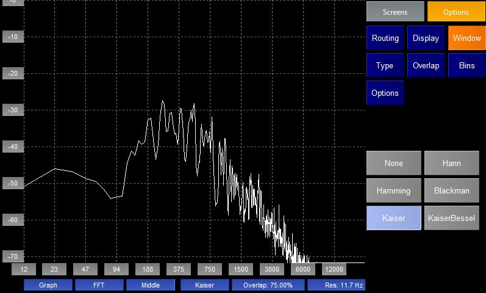
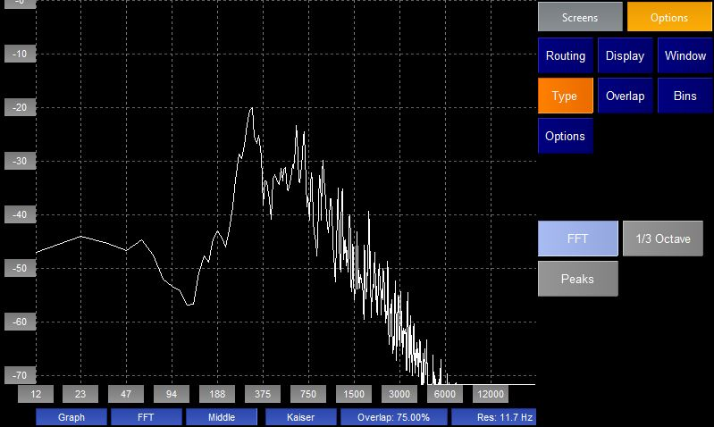
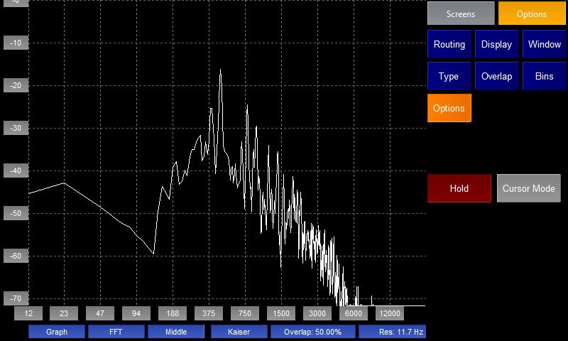

The FFT plugin shows the frequency spectrum of the audio. The plugin performs a Fast Fourier transform of each incoming chunk of audio and displays the the result in a graph where the x-axis shows the frequency components of the audio and the y-axis the amplitude of each frequency in dBFS. At the bottom of the screen the labels with the blue background show in order:

The plugin shows the FFT for a single channel of audio. The Routing options page allows you to select which channel you wish to analyse.
In stereo mode the user is also allowed to select
The 3rd blue label shows the current routing.

The display page allows the user to change they way the FFT is plotted.

When performing spectrum analysis of live audio the incoming audio must be split in to chunks of data and each individually analysised. This can cause "spectral leakage". Therefore a windowing function is usually applied to the chunks of audio to smooth the edges of each window. There are a number of different windowing functions available, all of which give slightly different characteristics to the resultant frequency response. See here for more information.
The 4th blue label shows the current windowing function.

There are currently three possible types of spectrum analysis that can be performed:

Another way of making the spectrum analysis more accurate when dealing with chunks of live audio is by overlapping each chunk of audio. This page allows the user to decide how much he wants this overlap to be.
The 5th blue label shows the amount of overlap.

When performing an FFT on audio the result is split in to a number of "bins" each a certain frequency wide. The more bins that you use the narrower each bin and hence the better the frequency resolution. However more bins means that you need to read in more audio before you can perform the FFT and so the refresh rate is slower. This page allows the user to choose the frequency resolution he wants.
The 6th blue label shows the current resolution.

From this page the user can freeze the display by pressing the Hold button and enter "Cursor Mode" by pressing the Cursor Mode button

When the user presses the Cursor Mode button the plugin will go full screen again and look as above. This allows the user to see the amplitude of different frequencies of the audio.
There is a red dotted line that shows the currently selected frequency. The grey label at the top shows the value of this frequency and the - and + buttons allow the user to change this frequency. The user can also change this frequency by touching the screen.
The label 2nd from right shows the amplitude of the selected frequency.
Pressing the "Exit" button will exit from Cursor Mode.